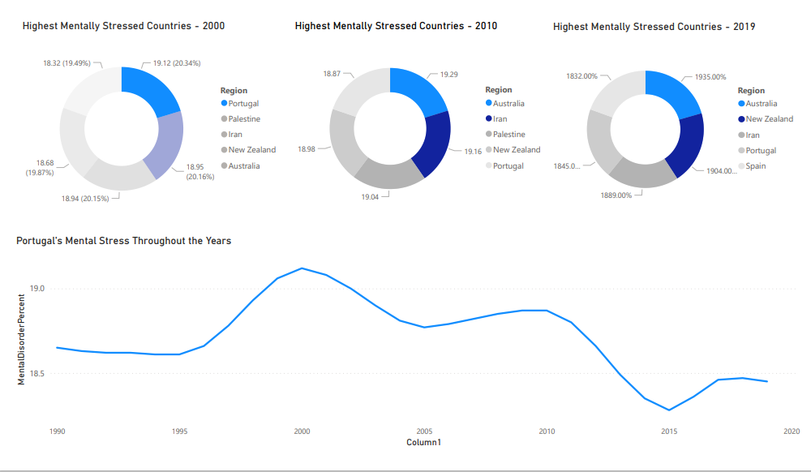

Power Bi Graph

Queries Executed
-- Shows Percentage of Mental Health per Year sorted by Region
-- Cast Prevalence Column to Decimal type from Varchar for functions
SELECT Entity AS Region, CAST(Year AS INT),
CAST([MenDis(Percent)] AS DECIMAL(18,2)) AS MentalDisorderPer
FROM [share-with-mental-and-substance-disorders]
-- Showing Percentage of Mental Disorders in India
Where Entity like '%Portugal%'
ORDER BY 2
-- Highest Mentally Stressed Countries in 2019
SELECT TOP 5 Entity AS Region, Year,
CAST([MenDis(Percent)] AS DECIMAL (18,2)) AS HighestMentalDisorder
FROM [share-with-mental-and-substance-disorders]
WHERE Year like '2019'
ORDER BY 3 DESC